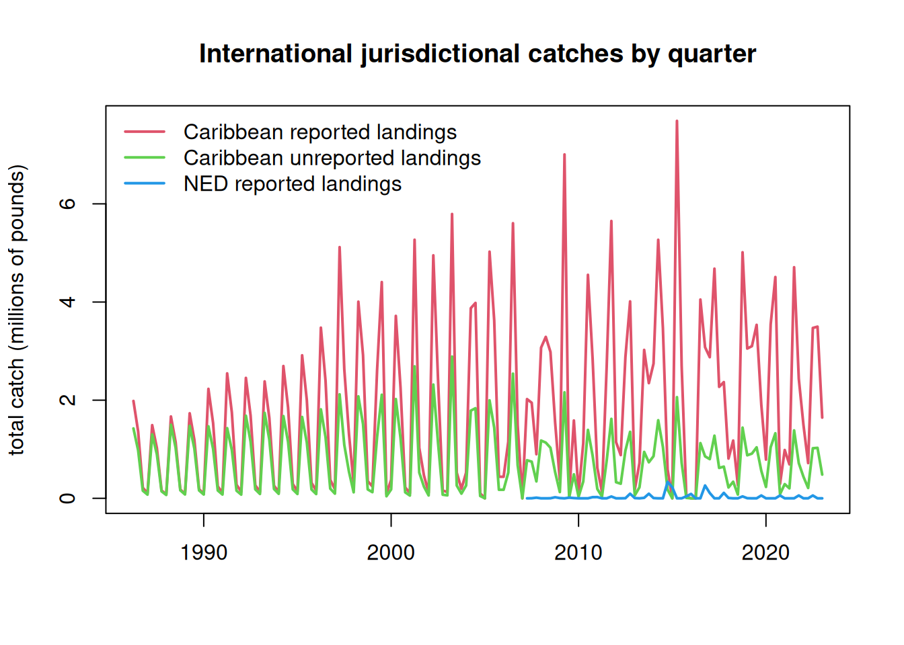

8.1 Compile catch in CAR and NED jurisdictional waters by discards and reporting type
Now that we have separated the EEZ catch by region, we will summarize it according to the areas used in the dolphin management strategy evaluation operating model. We will separate the catch by discards versus landings and reported versus unreported data so that we can use these data in various sensitivity analyses.
rm(list =ls()) # clear the workspace# load dataload("data/outputs/SAU_EEZs_WCA.RData") # SAU EEZ data for NED and NCA saved from earlierd <- dwest# summarize the catch by area, discards/landings and reported/unreportedtapply(d$lbs, list(d$catch_type, d$reporting_status, d$reg), sum, na.rm = T)
, , Canadian EEZ
Reported Unreported
Discards NA NA
Landings 1220146 NA
, , Western Central Atlantic EEZs
Reported Unreported
Discards NA 2179444
Landings 393279187 176215080
The catch from the Canadian EEZs is 100% landings, with no unreported data and no discards. In the WCA there are no reported discards, only unreported discards. Thus, we only need to separate out unreported discards and landings for the WCA.
# summarize the catch by year, area, discards/landings and reported/unreportedd$year <-factor(d$year, levels =1950:2019)dc <- d[which(d$reg =="Canadian EEZ"), ]dw <- d[which(d$reg =="Western Central Atlantic EEZs"), ]# remove those erroneous catches identified previously from the database prior to summarizing#dim(dw)dw <- dw[-which(dw$area_name =="Venezuela"& dw$fishing_entity =="Unknown Fishing Country"), ]dw <- dw[-which(dw$area_name =="Curaçao (Netherlands)"& dw$fishing_entity =="USA"), ]#dim(dw)CAN <-tapply(dc$lbs, list(dc$year, dc$catch_type, dc$reporting_status), sum, na.rm = T)tail(CAN)
Note that the Caribbean unreported discards in the database are negligible (< 1%) and we exclude them from further analysis.
8.2 Distribute the territorial international catches across quarters of the year
The international catches are only reported as annual catches and do not have any month or season associated with them. However, the MSE operating model requires seasonal catches. Lacking other information on the seasonality of these fleets, we will assume that the fleet distribution of the U.S. pelagic longline is representative of the seasonality of the jurisdictional fleets. Now we parse the annual catches according to the seasonality of the U.S. fleet.
The pelagic longline logbook data is only available going back to 1997, but there are Caribbean catches extending back to the 1950s. To interpolate the seasonality for 1986 - 1996, we take the average seasonality of the oldest 10 years of logbook data (1997 - 2006) and use those averages for the unknown years.
At the time of analysis, the SAU database only contained catches to 2019, so we interpolated the 2019 values to cover years 2020 - 2022.
#par(mar = c(5, 10, 3, 1))#barplot(tapply(dw$lbs, dw$gear_type, sum, na.rm = T), horiz = T, las = 2)#barplot(tapply(dc$lbs, dc$gear_type, sum, na.rm = T), horiz = T, las = 2)# read in the percentage of the catch by area and year-quarter combinations from the U.S. PLLload("data/outputs/per_PLLcatch_by_area_yearquarter.RData") names(percatch[1, 1, ]) # matrix 2 == Caribbean, matrix 7 == NED (Atlantic Northwest)
[1] "NCA" "CAR" "FLK" "NCFL" "NNC" "VBM" "NED"
CAN <- CAN[which(rownames(CAN) >=1997)] # PLL data are only available from 1997 on CAN <-c(CAN, CAN[length(CAN)], CAN[length(CAN)], CAN[length(CAN)]) # interpolate 2019 catches for 2020-2022CANqrt <- percatch[, , 7] # create matrix for final catch datafor (i in1:ncol(percatch)) { CANqrt[, i] <- percatch[, i, 7] * CAN[i] }percatch_car <- percatch[, , 2] # create matrix for Caribbean percentagesint <-rowMeans(percatch_car[, 1:10]) # calculate the average seasonality using the oldest 10 years of logbook datapercatch_car <-cbind(matrix(rep(int, length(1986:1996)), nrow =4), percatch_car) # attach those 10-year averages to years 1986:1996colnames(percatch_car) <-1986:2022# full data frame for Caribbean seasonality 1986 - 2022CAR <- CAR[which(rownames(CAR) >=1986), ] # only need Caribbean data from 1986 on CAR <-rbind(CAR, CAR[nrow(CAR), ], CAR[nrow(CAR), ], CAR[nrow(CAR), ]) # interpolate 2019 catches for 2020-2022#dim(CAR)#dim(percatch_car)CARrep <- percatch_car # create matrices for final catch dataCARunr <- percatch_carfor (i in1:ncol(percatch_car)) { CARrep[, i] <- percatch_car[, i] * CAR[i, 1] CARunr[, i] <- percatch_car[, i] * CAR[i, 3]}# ensure sums are equal after parsingsum(CARrep); sum(CAR$landings)
[1] 272388267
[1] 272388267
sum(CARunr); sum(CAR$unreported)
[1] 112754888
[1] 112754888
sum(CAN, na.rm = T); sum(CANqrt, na.rm = T)
[1] 1328482
[1] 1328482
The Canada jurisdictional data need to be combined with the NED high seas data calculated in the previous section, because both of these are a component of the international catches in the NED area.
load("data/outputs/NED_year_quarter.RData")NEDtot <- NED + CANqrt# ensure sums are correctsum(NED, na.rm = T) +sum(CANqrt, na.rm = T); sum(NEDtot, na.rm = T)
[1] 1808855
[1] 1808855
NEDtot <- NEDtot[, !is.na(colSums(NEDtot))] # remove NA columns from CAN data# plot the parsed out data by year-quarteryrs <-sort(rep(as.numeric(colnames(CARrep)), 4))qrt <-rep(1:4, length(yrs)/4)yrs1 <-sort(rep(as.numeric(colnames(NEDtot)), 4))qrt1 <-rep(1:4, length(yrs1)/4)matplot(yrs + qrt/4, cbind(matrix(CARrep), matrix(CARunr))/10^6, lty =1, lwd =2, col =2:3, type ="l", main ="International jurisdictional catches by quarter", xlab ="", ylab ="total catch (millions of pounds)")lines(yrs1 + qrt1/4, as.numeric(matrix(NEDtot))/10^6, lwd =2, col =4)legend("topleft", c("Caribbean reported landings", "Caribbean unreported landings", "NED reported landings"), lwd =2, col =2:4, bty ="n")

Finally, we format the data in the format for input into the operating model.